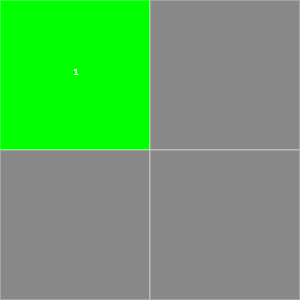
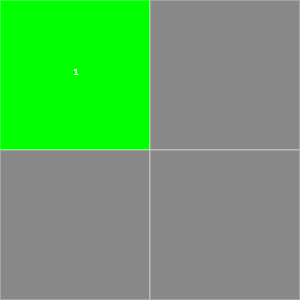

Solving Minesweeper
A game of probabilities
by Alsonel Rosario
Introducing Minesweeper
Minesweeper is a game usually intended for one player, though multiplayer variants exist. It looks like a board game but it's best played digitally due to how long it would take to set up the grid in a physical space, as well as the addition of some useful mechanics only feasible in a digital space. Gameplay-wise, imagine Battleship but instead of trying to hit a target you're trying to avoid it.
The Setup
The player is given a grid. The grid is filled with mines indiscriminately hidden and the player must successfully uncover every single non-mine grid space.
The Grid and Mines
The Minesweeper grid is usually a rectangular arrangement of squares, though variants exists where the grid consists of non-rectangular shapes like triangles or hexagons. Often the player can choose the dimensions of the grid as well as how many mines are hidden in the grid; the default grid sizes and mine counts presented in Microsoft Minesweeper are 9×9 with 10 mines, 16×16 with 40 mines, and 30×16 with 99 mines.
Microsoft Minesweeper specifically allows setting custom rectangular grid sizes from 8×8 to 30×24 and the number of mines from 10 to 667, though mine count for a W×H field is said to be capped at (W-1)×(B-1).
For the purposes of this project, the grid will be a rectangular arrangement of square spaces.
The Rules
The player chooses an unrevealed grid space. If a mine is buried under it revealing the space triggers it and the game is over, otherwise the player may continue to reveal spaces. The player wins when all non-mine spaces have been revealed before triggering a mine.
Digital Additions
Two particular additions can be found in digital versions of the game that would be difficult to implement in a physical space version. A timer keeps track of how long one has been playing and a revealed space will display a number signifying how many spaces directly adjacent to it contain buried mines, if there are any adjacent to it at all. A third addition, the flood fill, is often added for convenience.
The Timer
The timer keeps track of how long one plays the game, and stops when the player wins or loses. In Minesweeper variants that feature a timer, there is also an accompanying list of rankings for given grid sizes and mine counts with win times ordered from fastest to slowest.
Psychologically, this prioritizes faster times over higher win percentages and is outside the scope of this project. For the purposes of this project, the timer will be rendered irrelevant or removed entirely.
Nearby Mines
By virtue of being digital, most variants of Minesweeper can calculate if mines are buried under spaces adjacent to a given revealed space practically instantaneously and display the results on that space.
This project will not only display the number of mines surrounding a space, but it will also display extra calculations about that space related to the game.
Flood Fill
When a space is revealed, if no mine is buried and there are no mines directly adjacent to that space it is considered completely safe. If no mine is buried but there are mines adjacent it is considered safe. A space housing a mine is unsafe. Flood filling is activated when a player reveals a completely safe space and will automatically reveal all nearby completely safe spaces. Safe spaces are also revealed, though the fill does not go beyond those points. In a larger grid flood fill is essential for convenience, saving time by not requiring extra clicks to reveal completely safe spaces.
Other
There is a particularly noteworthy addition found in Microsoft's variant of digital Minesweeper. A feature was added that guarantees the first space chosen in a new game to be safe or completely safe. What actually happens is if a mine is under the chosen space it is moved to an initially safe corner, starting with the top-left and going clockwise if already occupied.
For the purposes of this project, this mine-moving behavior is not implemented in the accompanying Minesweeper game, Minimalsweeper.
Minimalsweeper
The Game in Action
For practical purposes, the grid will be rectangular (specifically, square for the purposes of this project) with square spaces, mine count will be known ahead of time, and timers are ignored. For a given grid size, the sampled mine count is generally assumed to be equal to the calculated cap of that size unless that grid has a default mine count in a difficulty setting of Microsoft Minesweeper. Mine placement is, for intents and purposes, randomized rather than specific layouts being intentionally designed.
1×1
A 1×1 grid is not considered practical for game purposes. Only two possibilities exist, either a mine is buried or it isn't, and it's rendered moot if one is aware of the mine count ahead of time.
2×2, cap=1
Another generally impractical grid size, a capped mine count of 1 results in a 1/4 probability of revealing the mine as the first choice. If that space is safe the remaining spaces each have a 1/3 probability of revealing the mine.
 2×2, no spaces revealed2×2, one safe space revealed
2×2, no spaces revealed2×2, one safe space revealed
If a safe space is then chosen, the remaining two spaces each have a 1/2 probability of revealing the mine.
At each stage of a 2×2 grid, given that all safe spaces have one adjacent mine, it tends towards a coinflip to choose the next space.
3×3, cap=4
The game becomes playable on a 3×3 grid, though the relatively high (compared to 2×2) mine count of 4 results in a 4/9 initial chance of selecting an unsafe space as the first move.
This is the last square grid where mine count limits remains under half the area of the grid.
4×4, cap=9
5×5, cap=16
6×6, cap=25
7×7, cap=36
On square grids, once the size surpasses 3×3 the cap on the mine count exceeds half of the board size. While this allows for greater flexibility in choosing mine counts it also results in potentially stacking the odds against the player.
8×8, cap=49, default=10
8×8 was previously the default grid size for the "Beginners" difficulty level of Microsoft Minesweeper with a mine count of 10, so calculations will be done with 10 mines.
9×9, cap=64, default=10
9×9 is the current default grid size for Microsoft Minesweeper's "Beginners" difficulty level with a mine count of 10.
10×10, cap=81
10×10 is the largest grid size this project will play. Larger sizes will require advanced computational techniques beyond the scope of this project.
The 10×10 grids played in this project will only have 10 mines buried for convenience.
Larger than 10×10
Larger grids have such high mine count limits that playing them with those mine counts is considered unfair to the player and strategy for those grids is therefore considered beyond the scope of this project.
Calculation
Surrounding Mines
As a byproduct of being primarily digital, Minesweeper offers hints to the player in the form of numbers. When a player uncovers a safe space, the amount of mines buried under directly adjacent spaces, covered or uncovered, is displayed on that space. Given that Minesweeper is, in essence, a game the specific locations are not given; the accompanying project respects this aspect to a degree, the only difference being that, for the purposes of this research, if a covered space containing a mine is flagged a counter denoting successfully flagged mines is updated in the inverse form "unflagged remaining."
Potential Mines
Raw calculation of the probability of a covered space containing an undiscovered mine is essentially # of undiscovered mines÷# of remaining covered spaces. This calculation is adjusted to account for successfully flagged spaces and is displayed under the label "raw %age (with verified flags)."
Basic heuristic calculation of the probability of a covered space containing an undiscovered mine takes into account the number of surrounding mines of adjacent safe spaces. This calculation essentially becomes K×# of undiscovered mines÷# of remaining covered spaces, where K is defined as the following:
K = 1;
for every adjacent uncovered space S, K = K×# of mines adjacent to S÷# of adjacent uncovered spaces
Post-mortem
The testing and refinement process revealed early on that my initial calculations were wrong and the calculation of K is inaccurate. For the sake of time I am unable to proceed further on this for academic purposes, though I will independently update this document and the accompanying demonstration at a later date to fix calculations using information found from the research of the two cited developers below.
© 2014 Alex Rosario
Previous significant Minesweeper algorithmic strategy research by Drew Roos and Bai Li.